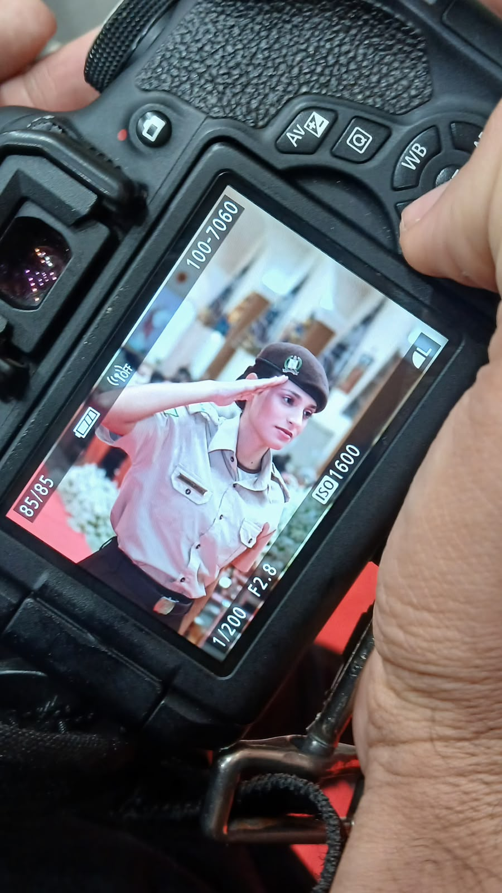
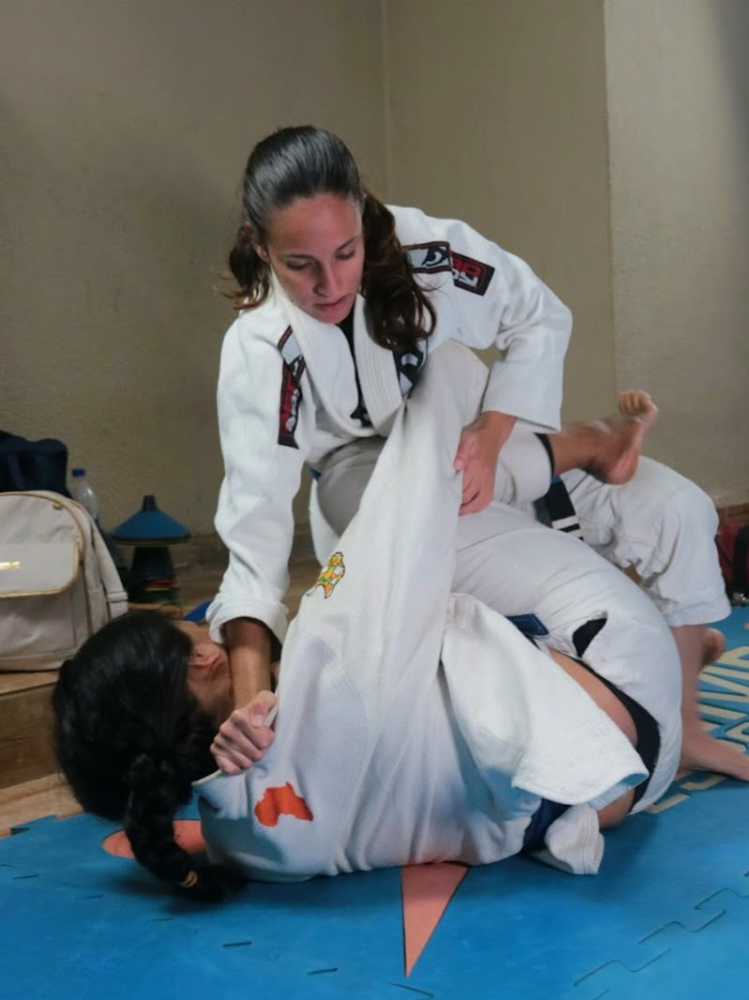
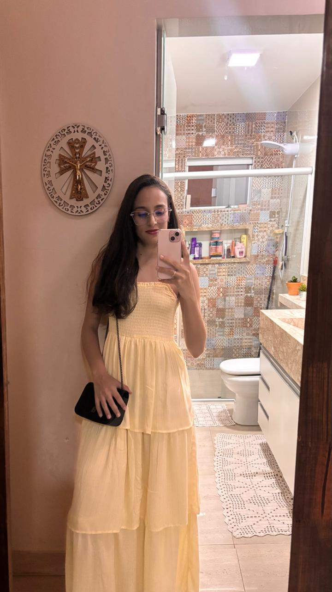

OLÁ, SEJA BEM-VINDO(A)!
Eu sou Eduarda Brito.
Olá! Tenho 19 anos e estou iniciando minha jornada na área de tecnologia, cursando o primeiro semestre de Sistemas de Informação. Atualmente, busco construir uma base sólida em lógica de programação e análise de dados, unindo teoria acadêmica com prática diária.
01 — SOBRE MIM
Como eu vim parar no curso de T.I.
Ainda no ensino médio, eu não sabia exatamente qual curso escolher, mas sempre me imaginei na área da saúde — eu sei, nada a ver com o que faço hoje!
Meu grupinho de amigos da época sempre falava em seguir na área de TI, mas eu nunca fui muito chegada nisso e mal sabia mexer em um computador. Eu, Eduarda, em TI? Tô fora! Mesmo assim, eles viviam comentando sobre o assunto e me chamando para esse universo.
Depois do ensino médio, precisei decidir o que queria fazer, mas como não tinha ajuda financeira para pagar uma faculdade de imediato, fui trabalhar primeiro para conseguir bancar meus estudos. Lá pelo meio do ano, comecei a olhar para a área de TI com mais carinho e passei a pesquisar bastante sobre as possibilidades do setor.
Depois de um tempo, decidi fazer minha inscrição, mas não fui muito bem acolhida na hora da matrícula. O atendente disse que eu não iria gostar, que a sala teria muitos homens e que eu não me adaptaria, entre outras coisas. Só de raiva, fui lá e me matriculei mesmo assim!
Minha primeira semana de aula foi terrível, porque eu praticamente só sabia ligar o computador — o que já era alguma coisa, né? Mas, conforme o curso foi avançando, eu simplesmente me apaixonei pela área, mesmo com todas as minhas dificuldades iniciais.
Foi aí que tudo fez sentido: sempre fui o tipo de pessoa que gosta de planejar, organizar e resolver quebra-cabeças, e descobrir que eu poderia fazer isso profissionalmente através da programação mudou tudo. Entrar em Sistemas de Informação transformou aquele antigo receio em habilidade prática. Hoje, divido meu tempo entre a faculdade, a prática profissional e a construção de projetos como este site, aprendendo um pouco mais sobre desenvolvimento a cada dia.
02 — MEUS INTERESSES
Coisas sobre mim que você não saberia.
Eu sou completamente apaixonada por esporte, especialmente pelo jiu-jítsu. Treino há quase quatro anos — em fevereiro de 2027 faço quatro anos — e hoje sou faixa azul com 4 graus. Também gosto muito de musculação e corrida. Por muito tempo a atividade física foi algo constante na minha vida, e agora dei uma pausa por conta da rotina bem corrida, mas continua sendo algo que eu admiro de verdade.
Minha comida preferida disparada é hambúrguer, e todo domingo tem a pipoquinha de lei que é sagrada.
No tempo livre, adoro assistir a filmes, pintar as unhas, comer um bom hambúrguer. Na verdade, praticamente todas as alternativas acima — para mim, os dias mais gratificantes são justamente aqueles em que consigo fazer tudo o que eu gosto de uma vez só.
03 — MEUS MOMENTOS
Um pouco da minha vida.
Um espaço para guardar fotos, lembranças e momentos especiais.



04 — CONTATO
Link do instagram: Instagram ↗